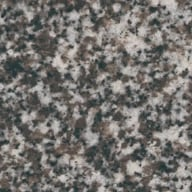
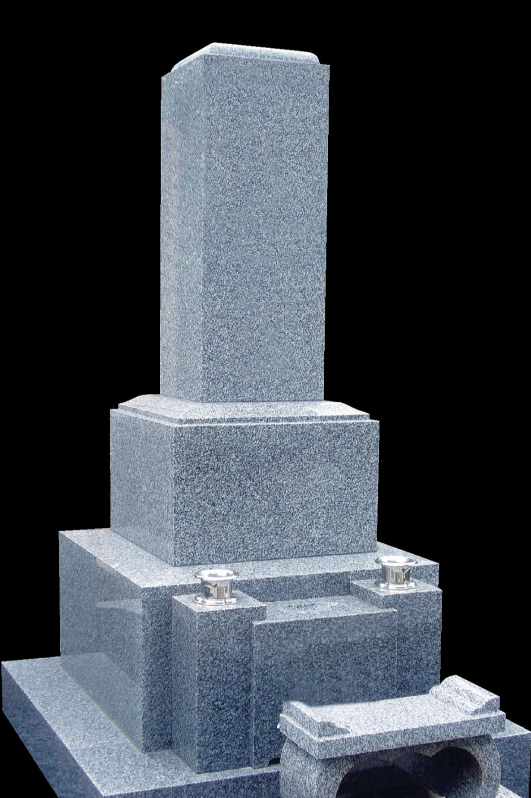
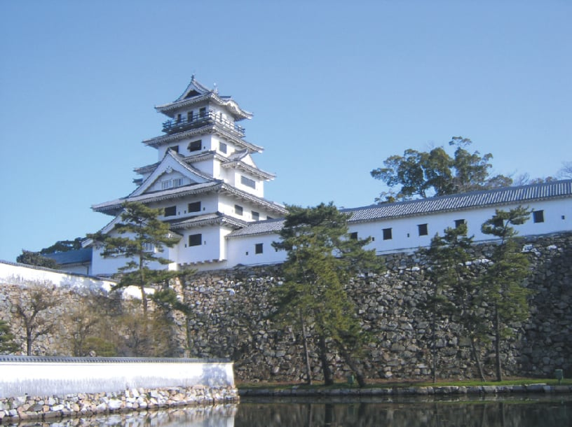
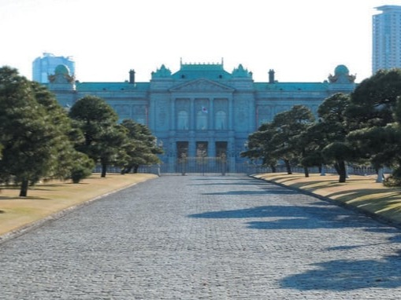
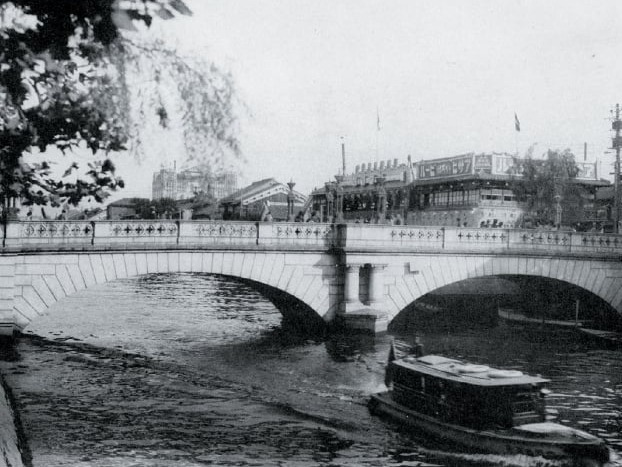

日本人が愛した中庸と気品
その美しさゆえに
貴婦人と称される最高級青御影石
美しい空と青い海に囲まれた瀬戸内海に浮かぶ大島は、
400年の歴史を持つ石工の里です。

大島石は、花崗岩の中でも群を抜く硬さと、青みをおびた透明感のある石肌で、日本を代表する高級銘石として絶大な信用と支持を得ています。
水を吸いにくく風化に強い大島石は、歳月を重ねる程にその青磁のような美しさを増していきます。

今治城
約400年前、徳川家康が藤堂高虎に今治城の築城を命じたことをきっかけに大島石の歴史が幕を開けました。
築城には大阪城築城で腕を磨いた石積名人・治衛門を石積棟梁の一人に任命しました。
今治城完成後、城の情報漏洩を防ぐため藩主の命により築城に関わった職人たちは処刑されました。
治衛門は処刑の難を逃れ大島に辿り着き、自らの技術を活かし採石をはじめたのが大島石の始まりだといわれています。
日清戦争に備えての広島県呉市の軍港、大阪・心斎橋、東京・赤坂離宮など現在でも歴史の重みを感じる建築物に登用されています。
大島石は調和のとれた石目から、落ち着きと侘び寂びを感じさせます。
その石目から日本の精神文化の中心地である京都で好まれ、各宗派の総本山や由緒ある寺院の墓地で圧倒的な建築実績を誇っています。
他にも、国会議事堂・赤坂離宮・日本銀行・出雲大社大鳥居・東宮御所・難波橋・戎橋・道後温泉・石鎚神社大鳥居・北海道釧路港など多数使われています。
また、司馬遼太郎や正岡子規、秋山好古など著名人のお墓にも多く使われています。

赤坂離宮

大阪心斎橋（写真提供：大島石材工業）

体積あたりの重量。同じ大きさの石でも数値が大きいほど重く、粒子が詰まっているため堅固であるとされています。
石が割れずに耐えることのできる強さ。数値が大きいほど、石に荷重を掛けてもその力に耐えることが出来るので頑丈な石とされています。
乾燥した石と吸水した石を比較した際の割合。石が水を吸う力を表し、数値が低いほど水を吸収しにくい。石に水が染み込むことの繰り返しや、寒冷地では染み込んだ水が凍結と融解を繰り返すことが石の劣化の原因とされています。